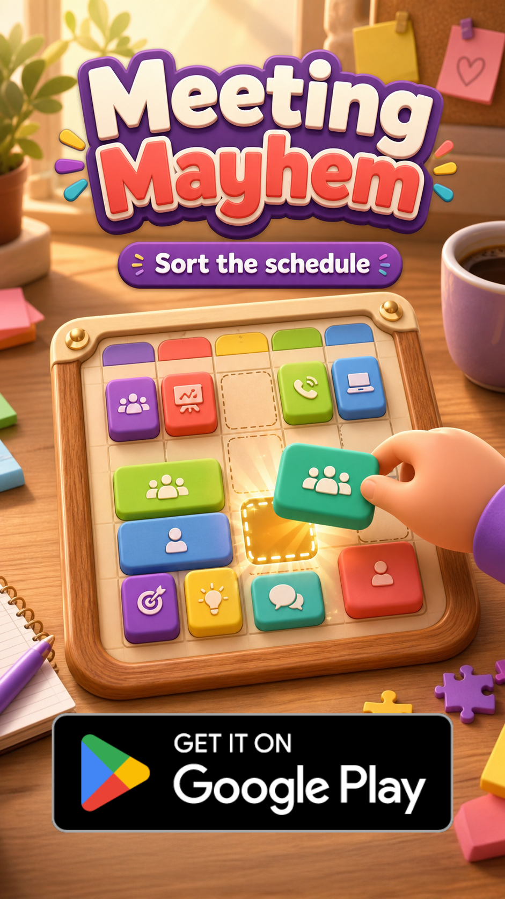

Articles
Game guides and notes from the studio.
Explore our Minit Games collection, learn why we build short-form games, and find Meeting Mayhem rules and strategy.
Browse our articles
Cat Crossing on Minit: One More Hop Through Traffic
Meet the orange cat in our new 3D traffic game: one forward hop at a time, with safe grass between the roads.
What Is Minit Games, and Why Are We Making Games for It?
Why Blueberry Basement is building for Minit Games: short, self-contained games, touch controls and different challenges from one game.
Our Games on Minit: Six Short-Form Games to Try
Explore six Blueberry Basement games on Minit Games, from calendar puzzles to Cat Crossing, with gameplay summaries and direct play links.
Meeting Mayhem on Android and Minit: What Changes?
Compare Meeting Mayhem on Google Play with its Minit adaptation: the same calendar puzzle idea, with different session structure and surrounding features.
Calendar Puzzle Games: How Scheduling Puzzles Work
Movable meetings, fixed durations, locked events, and the difference between scheduling puzzles and physical calendar puzzles.
10 Free Android Puzzle Games for Short Sessions
A practical top 10 list with quick-play puzzle games, including Flow Free, Two Dots, Unblock Me, Meeting Mayhem, and more.
How to Solve Overlapping Meeting Puzzles
Compare continuous gaps, check other days, and free the destinations that less flexible meetings need.
Meeting Mayhem Gameplay Guide
The Android controls, calendar limits, win condition, Undo, and a practical first scan of the board.
How a Crowded Work Calendar Inspired Meeting Mayhem
The idea from a crowded work schedule, the calendar rules, and the move toward hybrid-casual with daily tasks and the Lucky Spinner.
Meeting Mayhem Daily Tasks and Lucky Spinner Explained
How task progress differs from claimed rewards, what a UTC reset means, and where the Lucky Spinner fits into mobile play.
What Makes a Scheduling Puzzle Difficult?
Why a crowded calendar is not always a hard puzzle, and how duration, locked events and connected moves shape difficulty.
No articles match your search. Try another keyword or clear the filters.
Play the game
Try Meeting Mayhem on Android.
Download the free calendar puzzle game directly from its Google Play Store listing.
